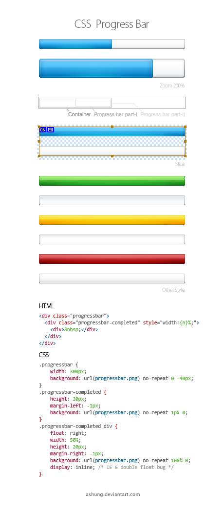

Blog:
Css sprites are really fun to use and they can make your design really unique from others. What are these sprites you might ask? CSS sprites is a technique used in many web designs. CSS sprites are used to optimize the loading of multiple images at once instead of loading them individually. What does this do, then? You have 100 images that you want to place on your site, instead of all the images being separate files, you can place them in one single file. What occurs is this really boosts HTTP requests at a faster pace so the pages load more quickly, this is extremely nice when dealing with icons, buttons, and other small decoration bits.
There are many fun things you can do with CSS sprites. For Example, have you ever seen those old classic video games with 8-bit UI elements that you could barely see most of the time? Well with CSS sprites, you can use pixel art from these classic games and create a nostalgic UI when an element is clicked or hovered over. This leads me to my next point of animated hover effects which are really fun to do! This is when you stack multiple frames in a sprite switching positions on hover. Maybe you want a black and white icon to shift to a more colorful version or animate a bounce by having different frames of a sprite show when hovered or clicked on. Hiding easter eggs in games is always fun and having people discover them is even more so! Maybe you want to make themed icon sets like a day mode with bright icons and a night mode with darker icons. This is just like dark and light themes you see on many websites and this is handled by CSS class toggling. One of the most fun things you can do with CSS sprites however, is doing some visual storytelling. For example, maybe you want to create a scrolling page where a character walks through all sorts of different environments, this character's walk cycle can go through many animations while the user scrolls and this uses sprite frames. Creating some sort of comic or storybook that's interactive can be done with this.

Overall, CSS sprites are used for way more than just a performance tool in a web developers design, they are a playground full of wonder and creativity that can build engaging, and nostalgic features into web pages. All it takes is a few lines of CSS and some image arrangement to get the design you want.